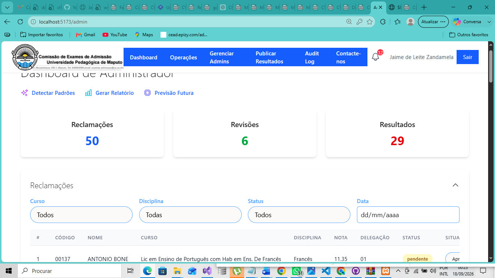
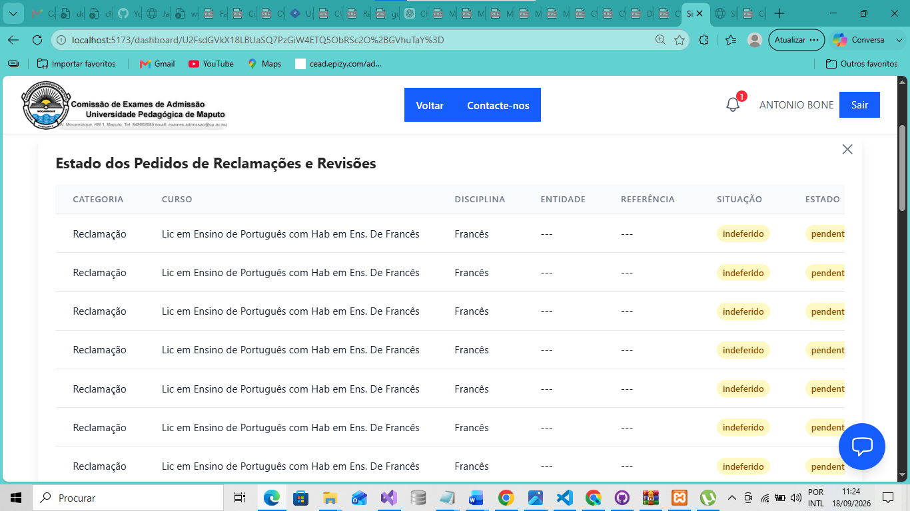
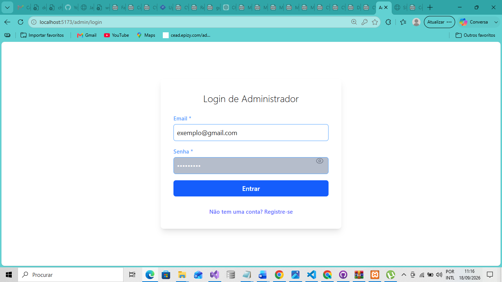
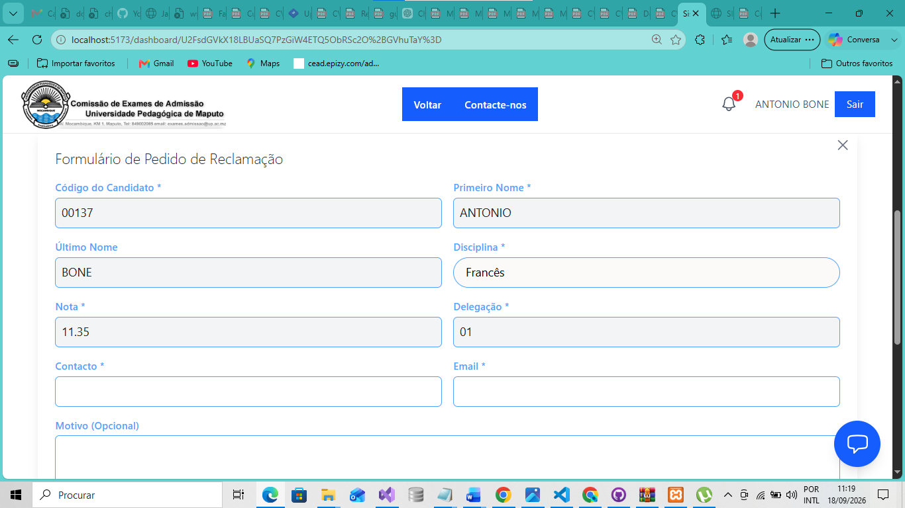
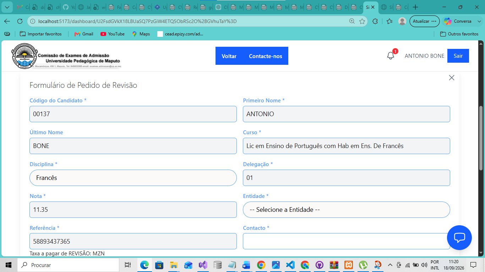
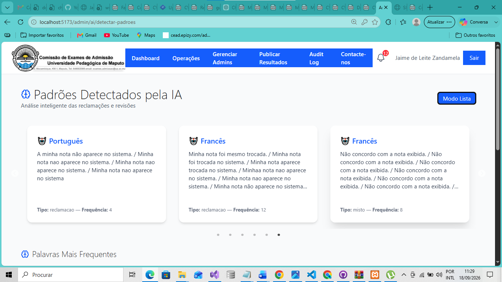

PROJECTO DE MONOGRAFIA · 2023 — 2026
SIGRR
Sistema de Gestão de Reclamações e Revisões de Exames de Admissão, com integração de funcionalidades de Inteligência Artificial para apoio à classificação, análise e tratamento de pedidos.

Sobre o projecto
O SIGRR — Sistema de Gestão de Reclamações e Revisões de Exames de Admissão é uma plataforma Web desenvolvida no âmbito da minha monografia de Licenciatura em Informática, na Universidade Pedagógica de Maputo.
O sistema foi concebido para apoiar a digitalização e organização do processo de submissão, acompanhamento, análise e tratamento de reclamações e pedidos de revisão de exames de admissão.
Para além da gestão tradicional dos pedidos, o projecto integra um motor de Inteligência Artificial desenvolvido em Python, destinado a apoiar a classificação de reclamações, análise de sentimento, identificação de padrões e produção de informação analítica para apoio à decisão.
Problema abordado
O processo convencional de apresentação e tratamento de reclamações e revisões de exames pode envolver procedimentos manuais, circulação de documentos físicos e reduzida rastreabilidade do estado dos pedidos.
O SIGRR foi concebido como uma alternativa digital para melhorar a organização da informação e facilitar o acompanhamento dos pedidos submetidos pelos candidatos.
Objectivos principais
- Digitalizar a submissão de reclamações e pedidos de revisão.
- Permitir o acompanhamento do estado dos pedidos.
- Centralizar a informação submetida pelos candidatos.
- Apoiar a triagem e classificação dos pedidos através de IA.
- Disponibilizar informação analítica à Comissão de Exames.
- Melhorar a rastreabilidade e o histórico das interacções.
- Apoiar a identificação de padrões recorrentes nas reclamações.
Funcionalidades principais
Submissão de reclamações
Registo online de reclamações relacionadas com resultados e situações identificadas pelos candidatos.
Pedidos de revisão
Submissão e acompanhamento de pedidos de revisão de exames de admissão.
Acompanhamento de pedidos
Consulta do estado dos pedidos e acesso ao histórico das interacções realizadas.
Gestão administrativa
Visualização, organização e tratamento dos pedidos pela Comissão de Exames ou utilizadores administrativos.
Classificação automática
Classificação das descrições submetidas em categorias previamente definidas através de modelos de aprendizagem automática.
Análise de sentimento
Análise do sentimento presente nas descrições dos pedidos para complementar a interpretação da informação.
Relatórios e indicadores
Apresentação de informação organizada por categorias, períodos, disciplinas e outros critérios analíticos.
Apoio à decisão
Utilização de resultados analíticos e previsões como apoio à identificação de áreas que merecem maior atenção.
Motor de Inteligência Artificial
Uma das principais características do projecto é a integração de um motor de Inteligência Artificial desenvolvido em Python e disponibilizado através de uma API independente.
O motor foi concebido para apoiar diferentes tarefas de análise de texto e dados, mantendo a possibilidade de encaminhar casos de menor confiança para revisão humana.
Funcionalidades de IA desenvolvidas
- Classificação automática: categorização de reclamações em cinco categorias.
- Análise de sentimento: identificação de tendências positivas, neutras ou negativas nas descrições.
- Confiança da previsão: utilização de níveis de confiança para apoiar o encaminhamento de casos para revisão humana.
- Detecção de padrões: análise de semelhanças e agrupamentos em reclamações.
- Previsão: utilização de modelos de aprendizagem automática para análise de dados tabulares.
- Assistente conversacional: protótipo de chatbot baseado em recuperação de respostas e análise de sentimento.
- Auditoria e governança: consideração de mecanismos de consentimento, anonimização, hash e registo das operações relacionadas com IA.
Arquitectura da solução
A solução foi estruturada através da separação entre a aplicação principal e os serviços especializados de Inteligência Artificial.
[ Candidato / Administrador ]
│
▼
[ React Frontend ]
│
HTTP / Axios
│
▼
[ Laravel API ]
│ │
▼ ▼
[ MySQL ] [ FastAPI ]
│
▼
[ Modelos de IA ]
│
▼
[ Resultados /
Métricas /
Gráficos ]
Componentes principais
- React: interface Web para candidatos e utilizadores administrativos.
- Laravel: backend principal, regras de negócio, autenticação e persistência da aplicação.
- MySQL: armazenamento dos dados operacionais do sistema.
- FastAPI: micro-serviço Python responsável pela disponibilização das funcionalidades de Inteligência Artificial.
Validação do modelo de classificação
Durante a investigação, o classificador foi avaliado através de validação cruzada estratificada com cinco divisões, utilizando um conjunto de 348 registos distribuídos por cinco categorias.
Estes valores correspondem aos resultados da avaliação realizada no contexto da investigação académica e não devem ser interpretados automaticamente como garantias de desempenho em ambiente de produção.
O meu trabalho no projecto
Participei no ciclo completo de concepção, desenvolvimento, integração e validação do sistema, desde a definição do problema até à implementação do protótipo funcional utilizado no trabalho de monografia.
- Definição do problema, objectivos e âmbito da solução.
- Levantamento e análise de requisitos.
- Definição de regras de negócio e fluxos funcionais.
- Concepção da arquitectura React, Laravel e FastAPI.
- Modelação de dados e organização das entidades.
- Desenvolvimento da aplicação Web.
- Implementação do backend e das operações CRUD.
- Integração entre a aplicação Laravel e os micro-serviços Python.
- Desenvolvimento directo dos serviços e componentes de IA.
- Implementação de classificação, sentimento e análise de dados.
- Testes funcionais e testes de integração.
- Avaliação experimental dos modelos de aprendizagem automática.
- Documentação técnica e elaboração do relatório de investigação.
Tecnologias utilizadas
Frontend
Backend
Inteligência Artificial e Dados
Ferramentas
Galeria do projecto






Contexto e estado do projecto
O SIGRR foi desenvolvido como projecto académico de investigação no âmbito da minha Licenciatura em Informática. O resultado inclui um protótipo funcional e uma avaliação experimental dos modelos de Inteligência Artificial utilizados.
O código-fonte não está publicamente disponível neste momento. O repositório poderá ser adicionado caso o projecto seja preparado para publicação.